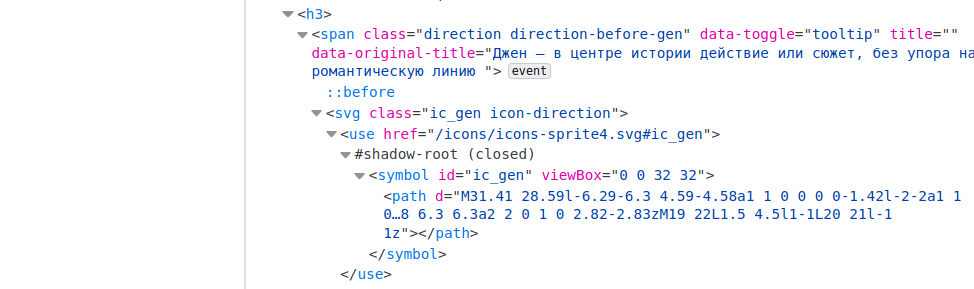
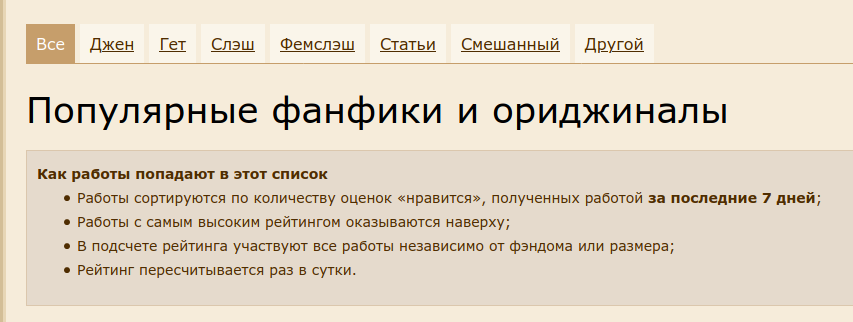

4 Сбор данных из интернета: rvest
library(tidyverse)Достаточно часто данные не ходят упакованные в готовые файлы .csv или .json. Иногда данные лежат в открытом доступе на какой-нибудь странице в интернете. А иногда никто и не думал, что что-то станет данными: заголовки и тексты новостей, комментарии, твиты и т. п. В этом разделе мы обсудим основы извлечения данных из вебстраниц.
4.1 Введение
Любая html-документ — это обычный xml файл, т. е. такой иерархически устроенный тип данных, где у каждого узла (кроме корневого) есть родительский узел и могут быть дочерние узлы и дополнительные атрибуты. Обычно самый верхний узел называется html, который имеет два дочерних узла head и body. Каждый html-документ является инструкцией для браузера, в которой говориться что и в каком порядке нужно отображать, но одновременно эта инструкция является кодом, который мы можем посмотреть. В большинстве браузеров это можно сделать при помощи горячих клавиш Ctrl+U, в Apple Safari — Cmd+Option+U. Кроме того есть режим разработчика, который позволяет делать много всего, в том числе наводить на какой-то объект в браузере и узнавать какой фрагмент кода ему соответствует (этот режим можно вызвать, нажав F12 или Ctrl+Shift+I, в Apple Safari вроде нет горячих клавиш и нужно вызывать как-то из меню). Большинство узлов html-документа состоят из
- тег узла, например,
p - значения узла, например,
Жили-были три медведя. id(уникальные объекты вhtml-документе),class(неуникальные объекты вhtml-документе) и другием атрибуты узла
Например:
<p class="story" some_atribute = 42>Жили-были три медведя.</p>Некоторые html-документ не являются статическими и изменяются после того, как страница была открыта при помощи JavaScript’а. Это динамичность может быть скрытой, когда пользователь лишь видит, как открывается страница, а иногда может быть завязана на некоторые действия пользователя. Информацию со статических страниц собирать достаточно просто и для этого нам хватит пакета rvest. C динамическими сайтами все иногда несколько сложнее. Иногда на динамических страницах можно отследить источник данных, посмотрев вкладку Network в режиме разработчика (ведь откуда-то эти данные появляются в браузере, правда?). Иногда необходимо делать POST и GET запросы, хранить cookies, и т. п. — все это можно сделать при помощи пакета httr, а в самых сложных случаях (когда JavaScript JavaScript погоняет) поможет пакет RSelenium.
html-тэгов очень много. Нам понадобятся:
h1,h2,h3… – заголовки разного уровняp– абзац текстаa– ссылкаdiv– блок страницы (от слова division)
Остальное смотрите, например, здесь.
4.2 Работа с пакетом rvest
Пакет rvest позволяет скачивать страницы и потом их обрабатывать. Включим библиотеку:
library(rvest)4.2.1 Простой случай
В качестве примера рассмотрим раздел популярное сайта <ficbook.net>:
source <- read_html("https://ficbook.net/popular")Объект source является списком, который содержит html-страницу. Давайте для начала выгрузим заголовок первого уровня. Функция html_nodes() позволяет вычленить исключительно узлы с каким-то тегом из всего xml-файла.
source %>%
html_nodes("h1"){xml_nodeset (1)}
[1] <h1>\n Популярные фанфики и ориджиналы\n </h1>Как видно, функция вовзращает целый узел со всеми тегами.
Давайте допустим, что мы хотем скачать все заголовки новостей, т. е. нам нужны значения всех узло h3.
source %>%
html_nodes("h3"){xml_nodeset (51)}
[1] <h3>\n \n ...
[2] <h3>\n \n ...
[3] <h3>\n \n ...
[4] <h3>\n \n ...
[5] <h3>\n \n ...
[6] <h3>\n \n ...
[7] <h3>\n \n ...
[8] <h3>\n \n ...
[9] <h3>\n \n ...
[10] <h3>\n \n ...
[11] <h3>\n \n ...
[12] <h3>\n \n ...
[13] <h3>\n \n ...
[14] <h3>\n \n ...
[15] <h3>\n \n ...
[16] <h3>\n \n ...
[17] <h3>\n \n ...
[18] <h3>\n \n ...
[19] <h3>\n \n ...
[20] <h3>\n \n ...
...Ничего не видно. Это связано с тем, что на данном сайте в заголовки добавили много всего:

Теперь если мы хотим обратиться к значениям этих узлов, мы можем использовать функцию html_text():
source %>%
html_nodes("h3") %>%
html_text() [1] "\n \n \n \n \n\n Yellow\n 40984"
[2] "\n \n \n \n \n\n Сметана\n 30352"
[3] "\n \n \n \n \n\n Три месяца, ноль дней и ноль часов\n 2469"
[4] "\n \n \n \n \n\n Снежный принц для Владыки\n 21272"
[5] "\n \n \n \n \n\n Лисамайн\n 26612"
[6] "\n \n \n \n \n\n shadow moses \n 1889"
[7] "\n \n \n \n \n\n Дракобыль\n 22403"
[8] "\n \n \n \n \n\n Невинный для Ночного господина\n 13897"
[9] "\n \n \n \n \n\n Ban Crann\n 17641"
[10] "\n \n \n \n \n\n the union is our only strength\n 1312"
[11] "\n \n \n \n \n\n Вжик-вжик\n 19581"
[12] "\n \n \n \n \n\n Район спальный \n 12453"
[13] "\n \n \n \n \n\n feels like home\n 23591"
[14] "\n \n \n \n \n\n soon, he is going to be my lover\n 1154"
[15] "\n \n \n \n \n\n Волчье\n 15872"
[16] "\n \n \n \n \n\n Deadlock\n 724855"
[17] "\n \n \n \n \n\n Не провоцируй меня, Слоник!\n 10715"
[18] "\n \n \n \n \n\n злой \n 1063"
[19] "\n \n \n \n \n\n Молочайный Ангел\n 15271"
[20] "\n \n \n \n \n\n fuck me, bestie\n 1136"
[21] "\n \n \n \n \n\n Волчий Рай\n 13931"
[22] "\n \n \n \n \n\n Миша и опер Медведев\n 141813"
[23] "\n \n \n \n \n\n Jamais vu\n 324814"
[24] "\n \n \n \n \n\n С любовью, розовый\n 11273"
[25] "\n \n \n \n \n\n Принц на белом ковре \n 7732"
[26] "\n \n \n \n \n\n at the end of everything\n 691"
[27] "\n \n \n \n \n\n Молодой Мороз\n 6923"
[28] "\n \n \n \n \n\n Я больше не облажаюсь, старлей...\n 11943"
[29] "\n \n \n \n \n\n Лесная ягода \n 2100"
[30] "\n \n \n \n \n\n Теория большого срыва\n 816"
[31] "\n \n \n \n \n\n Знание — сила!\n 430121"
[32] "\n \n \n \n \n\n Кабинет 69.\n 2808"
[33] "\n \n \n \n \n\n К вопросу об отношениях\n 21551"
[34] "\n \n \n \n \n\n Из пункта А в пункт Б\n 5901"
[35] "\n \n \n \n \n\n Приятный вечер \n 576"
[36] "\n \n \n \n \n\n Алаймент\n 458866"
[37] "\n \n \n \n \n\n Последний день первого летнего месяца \n 5521"
[38] "\n \n \n \n \n\n Хочу детей от друга\n 19121"
[39] "\n \n \n \n \n\n Светлячок\n 13501"
[40] "\n \n \n \n \n\n В лесу, где мерцают светлячки.\n 520"
[41] "\n \n \n \n \n\n Парень из квартиры напротив \n 379310"
[42] "\n \n \n \n \n\n Последнее, чем стоит заниматься капитану Ордо Фавониус\n 516"
[43] "\n \n \n \n \n\n Тяжела и неказиста жизнь простого героиста\n 509"
[44] "\n \n \n \n \n\n Необычные \n 11688"
[45] "\n \n \n \n \n\n remember not to get too close to stars\n 488"
[46] "\n \n \n \n \n\n Не зная, как, когда или откуда\n 846"
[47] "\n \n \n \n \n\n Но... я же Питер Паркер!\n 627814"
[48] "\n \n \n \n \n\n Привет, Джимми!\n 9022"
[49] "\n \n \n \n \n\n Выбор Тристана\n 24346"
[50] "\n \n \n \n \n\n Бывшие\n 23742"
[51] "Войдите в аккаунт" Стоит почистить:
source %>%
html_nodes("h3") %>%
html_text() %>%
str_replace_all(" {1,}", " ") [1] "\n \n \n \n \n\n Yellow\n 40984"
[2] "\n \n \n \n \n\n Сметана\n 30352"
[3] "\n \n \n \n \n\n Три месяца, ноль дней и ноль часов\n 2469"
[4] "\n \n \n \n \n\n Снежный принц для Владыки\n 21272"
[5] "\n \n \n \n \n\n Лисамайн\n 26612"
[6] "\n \n \n \n \n\n shadow moses \n 1889"
[7] "\n \n \n \n \n\n Дракобыль\n 22403"
[8] "\n \n \n \n \n\n Невинный для Ночного господина\n 13897"
[9] "\n \n \n \n \n\n Ban Crann\n 17641"
[10] "\n \n \n \n \n\n the union is our only strength\n 1312"
[11] "\n \n \n \n \n\n Вжик-вжик\n 19581"
[12] "\n \n \n \n \n\n Район спальный \n 12453"
[13] "\n \n \n \n \n\n feels like home\n 23591"
[14] "\n \n \n \n \n\n soon, he is going to be my lover\n 1154"
[15] "\n \n \n \n \n\n Волчье\n 15872"
[16] "\n \n \n \n \n\n Deadlock\n 724855"
[17] "\n \n \n \n \n\n Не провоцируй меня, Слоник!\n 10715"
[18] "\n \n \n \n \n\n злой \n 1063"
[19] "\n \n \n \n \n\n Молочайный Ангел\n 15271"
[20] "\n \n \n \n \n\n fuck me, bestie\n 1136"
[21] "\n \n \n \n \n\n Волчий Рай\n 13931"
[22] "\n \n \n \n \n\n Миша и опер Медведев\n 141813"
[23] "\n \n \n \n \n\n Jamais vu\n 324814"
[24] "\n \n \n \n \n\n С любовью, розовый\n 11273"
[25] "\n \n \n \n \n\n Принц на белом ковре \n 7732"
[26] "\n \n \n \n \n\n at the end of everything\n 691"
[27] "\n \n \n \n \n\n Молодой Мороз\n 6923"
[28] "\n \n \n \n \n\n Я больше не облажаюсь, старлей...\n 11943"
[29] "\n \n \n \n \n\n Лесная ягода \n 2100"
[30] "\n \n \n \n \n\n Теория большого срыва\n 816"
[31] "\n \n \n \n \n\n Знание — сила!\n 430121"
[32] "\n \n \n \n \n\n Кабинет 69.\n 2808"
[33] "\n \n \n \n \n\n К вопросу об отношениях\n 21551"
[34] "\n \n \n \n \n\n Из пункта А в пункт Б\n 5901"
[35] "\n \n \n \n \n\n Приятный вечер \n 576"
[36] "\n \n \n \n \n\n Алаймент\n 458866"
[37] "\n \n \n \n \n\n Последний день первого летнего месяца \n 5521"
[38] "\n \n \n \n \n\n Хочу детей от друга\n 19121"
[39] "\n \n \n \n \n\n Светлячок\n 13501"
[40] "\n \n \n \n \n\n В лесу, где мерцают светлячки.\n 520"
[41] "\n \n \n \n \n\n Парень из квартиры напротив \n 379310"
[42] "\n \n \n \n \n\n Последнее, чем стоит заниматься капитану Ордо Фавониус\n 516"
[43] "\n \n \n \n \n\n Тяжела и неказиста жизнь простого героиста\n 509"
[44] "\n \n \n \n \n\n Необычные \n 11688"
[45] "\n \n \n \n \n\n remember not to get too close to stars\n 488"
[46] "\n \n \n \n \n\n Не зная, как, когда или откуда\n 846"
[47] "\n \n \n \n \n\n Но... я же Питер Паркер!\n 627814"
[48] "\n \n \n \n \n\n Привет, Джимми!\n 9022"
[49] "\n \n \n \n \n\n Выбор Тристана\n 24346"
[50] "\n \n \n \n \n\n Бывшие\n 23742"
[51] "Войдите в аккаунт" Ага теперь видно, что к нам в заголовки затесалось предложение войти в аккаунт. Пока просто удалим.
source %>%
html_nodes("h3") %>%
html_text() %>%
str_replace_all(" {1,}", " ") %>%
str_remove_all("\n") %>% # удалим все \n
str_remove_all("^ {1,}") # удалим все пробелы в начале строки [1] "Yellow 40984"
[2] "Сметана 30352"
[3] "Три месяца, ноль дней и ноль часов 2469"
[4] "Снежный принц для Владыки 21272"
[5] "Лисамайн 26612"
[6] "shadow moses 1889"
[7] "Дракобыль 22403"
[8] "Невинный для Ночного господина 13897"
[9] "Ban Crann 17641"
[10] "the union is our only strength 1312"
[11] "Вжик-вжик 19581"
[12] "Район спальный 12453"
[13] "feels like home 23591"
[14] "soon, he is going to be my lover 1154"
[15] "Волчье 15872"
[16] "Deadlock 724855"
[17] "Не провоцируй меня, Слоник! 10715"
[18] "злой 1063"
[19] "Молочайный Ангел 15271"
[20] "fuck me, bestie 1136"
[21] "Волчий Рай 13931"
[22] "Миша и опер Медведев 141813"
[23] "Jamais vu 324814"
[24] "С любовью, розовый 11273"
[25] "Принц на белом ковре 7732"
[26] "at the end of everything 691"
[27] "Молодой Мороз 6923"
[28] "Я больше не облажаюсь, старлей... 11943"
[29] "Лесная ягода 2100"
[30] "Теория большого срыва 816"
[31] "Знание — сила! 430121"
[32] "Кабинет 69. 2808"
[33] "К вопросу об отношениях 21551"
[34] "Из пункта А в пункт Б 5901"
[35] "Приятный вечер 576"
[36] "Алаймент 458866"
[37] "Последний день первого летнего месяца 5521"
[38] "Хочу детей от друга 19121"
[39] "Светлячок 13501"
[40] "В лесу, где мерцают светлячки. 520"
[41] "Парень из квартиры напротив 379310"
[42] "Последнее, чем стоит заниматься капитану Ордо Фавониус 516"
[43] "Тяжела и неказиста жизнь простого героиста 509"
[44] "Необычные 11688"
[45] "remember not to get too close to stars 488"
[46] "Не зная, как, когда или откуда 846"
[47] "Но... я же Питер Паркер! 627814"
[48] "Привет, Джимми! 9022"
[49] "Выбор Тристана 24346"
[50] "Бывшие 23742"
[51] "Войдите в аккаунт" Теперь попробуем сделать таблицу и уберем цифры в конце:
source %>%
html_nodes("h3") %>%
html_text() %>%
str_replace_all(" {1,}", " ") %>%
str_remove_all("\n") %>%
str_remove_all("^ {1,}") %>%
enframe() %>% # превратим в таблицу
slice(-n()) %>% # удалим последнюю строчку
mutate(numbers = str_extract(value, "\\d*$"), # выделим код
value = str_remove(value, str_c(" {1,}", numbers))) %>% # удалим код и пробел
select(-numbers) -> # удалим столбец
pop_fan_fiction
pop_fan_fictionКаждый заголовок содержит ссылку на страницу фанфика, как бы ее добыть? Ссылка на самом деле в теге , так что теперь нам нужны такие <a>, которые находятся внутри <h3>:
source %>%
html_nodes("h3 a"){xml_nodeset (50)}
[1] <a href="/readfic/10429398" class="visit-link">Yellow</a>
[2] <a href="/readfic/10357485" class="visit-link">Сметана</a>
[3] <a href="/readfic/10421614" class="visit-link">Три месяца, ноль дней и н ...
[4] <a href="/readfic/10395350" class="visit-link">Снежный принц для Владыки ...
[5] <a href="/readfic/10019420" class="visit-link">Лисамайн</a>
[6] <a href="/readfic/10406612" class="visit-link">shadow moses </a>
[7] <a href="/readfic/10121328" class="visit-link">Дракобыль</a>
[8] <a href="/readfic/10420671" class="visit-link">Невинный для Ночного госп ...
[9] <a href="/readfic/10033794" class="visit-link">Ban Crann</a>
[10] <a href="/readfic/10431022" class="visit-link">the union is our only str ...
[11] <a href="/readfic/10019753" class="visit-link">Вжик-вжик</a>
[12] <a href="/readfic/10411907" class="visit-link">Район спальный </a>
[13] <a href="/readfic/10408684" class="visit-link">feels like home</a>
[14] <a href="/readfic/9570998" class="visit-link">soon, he is going to be my ...
[15] <a href="/readfic/10037569" class="visit-link">Волчье</a>
[16] <a href="/readfic/9812943" class="visit-link">Deadlock</a>
[17] <a href="/readfic/10442863" class="visit-link">Не провоцируй меня, Слони ...
[18] <a href="/readfic/10444901" class="visit-link">злой </a>
[19] <a href="/readfic/10110697" class="visit-link">Молочайный Ангел</a>
[20] <a href="/readfic/10388478" class="visit-link">fuck me, bestie</a>
...Так как ссылка находиться не в тексте, а в атрибуте нужна функция html_attr():
source %>%
html_nodes("h3 a") %>%
html_attr("href") [1] "/readfic/10429398" "/readfic/10357485" "/readfic/10421614"
[4] "/readfic/10395350" "/readfic/10019420" "/readfic/10406612"
[7] "/readfic/10121328" "/readfic/10420671" "/readfic/10033794"
[10] "/readfic/10431022" "/readfic/10019753" "/readfic/10411907"
[13] "/readfic/10408684" "/readfic/9570998" "/readfic/10037569"
[16] "/readfic/9812943" "/readfic/10442863" "/readfic/10444901"
[19] "/readfic/10110697" "/readfic/10388478" "/readfic/10114627"
[22] "/readfic/10416997" "/readfic/10395456" "/readfic/10402262"
[25] "/readfic/10381686" "/readfic/10432311" "/readfic/10034120"
[28] "/readfic/10402435" "/readfic/9773287" "/readfic/10411105"
[31] "/readfic/10371922" "/readfic/10309689" "/readfic/10415930"
[34] "/readfic/10038401" "/readfic/10434460" "/readfic/10112253"
[37] "/readfic/10428900" "/readfic/10379341" "/readfic/10371908"
[40] "/readfic/10431516" "/readfic/9291104" "/readfic/10402989"
[43] "/readfic/10433749" "/readfic/8160132" "/readfic/10440072"
[46] "/readfic/10399219" "/readfic/7861843" "/readfic/10161264"
[49] "/readfic/10329650" "/readfic/9178422" Теперь мы можем сохранить это в переменную нашей таблицы pop_fan_fiction:
source %>%
html_nodes("h3 a") %>%
html_attr("href") ->
pop_fan_fiction$link
pop_fan_fictionТеперь, если мы соединим кусочек в графе link и https://ficbook.net, то мы получим ссылку на текст/оглавления фанфика.
Добавьте к таблице столбец с количеством лайков.
Попробуем обкачать авторов и ссылки на их страницы и добавить их к таблице. Если мы присмотримся, то авторы находятся в теге <div>. Однако это очень популярный тэг, и в нем может быть все, что угодно, так что добавим еще тегов, чтобы указать путь точнее:
[1] "Канда Лотос" "Канда Лотос"
[3] "Франк пишет" "chate"
[5] "Канда Лотос" "magnus bane"
[7] "Канда Лотос" "Это Хорошо"
[9] "Канда Лотос" "Чайка_Лу"
[11] "Канда Лотос" "Deus Rex"
[13] "international playgirl" "Чайка_Лу"
[15] "Канда Лотос" "rikookie"
[17] "Violetblackish" "советница"
[19] "Канда Лотос" "Eva_Grey"
[21] "Канда Лотос" "YKET"
[23] "rikookie" "magnus bane"
[25] "SGI" "Чайка_Лу"
[27] "YKET" "Shifer dark"
[29] "minimoninam" "Мистер_Крот"
[31] "Aurit" "Anna Moss"
[33] "лунный мечтатель полтергейста" "Violetblackish"
[35] "Что то" "Rakot"
[37] "i n s t a b i l i t a t e m" "SugarSyrup"
[39] "Pak Yeon Hee" "Нана Юнминовна"
[41] "Bunny Kam" "Лиэрт"
[43] "aksiomazweifel" "Olesya Fox"
[45] "Чайка_Лу" "Vi Ewaz"
[47] "sarahyyy" "Drizzt"
[49] "Аргус Филченков" "голубая радуга"
[51] "younghosie" Все хорошо, но получилось 52 строчки, а в нашем pop_fan_fiction лишь 50 строчек. Это связано с тем, что у некоторых фанфиков несколько авторов. К счастью это можно “вылечить” посмотрев на ссылки:
source %>%
html_nodes("div span a") %>%
html_attr("href") ->
author_links
author_links [1] "/authors/1819996"
[2] "/authors/1819996"
[3] "/authors/4371126"
[4] "/authors/45010"
[5] "/authors/1819996"
[6] "/authors/211970"
[7] "/authors/1819996"
[8] "/authors/1188188"
[9] "/authors/1819996"
[10] "/authors/923348"
[11] "/authors/1819996"
[12] "/authors/3601159"
[13] "/authors/2551368"
[14] "/authors/923348"
[15] "/authors/1819996"
[16] "/authors/153034"
[17] "/authors/2486714"
[18] "/authors/782676"
[19] "/authors/1819996"
[20] "/authors/1753188"
[21] "/authors/1819996"
[22] "/authors/3664744"
[23] "/authors/153034"
[24] "/authors/211970"
[25] "/authors/3043458"
[26] "/authors/923348"
[27] "/authors/3664744"
[28] "/authors/216926"
[29] "/authors/4262993"
[30] "/authors/4452996"
[31] "/authors/4888014"
[32] "/authors/2367076"
[33] "/authors/125758"
[34] "/authors/2486714"
[35] "/authors/1609555"
[36] "/authors/407214"
[37] "/authors/3940941"
[38] "/authors/4300578"
[39] "/authors/2353948"
[40] "/authors/54483"
[41] "/authors/838868"
[42] "/authors/184570"
[43] "/authors/117765"
[44] "/authors/2667581"
[45] "/authors/923348"
[46] "/authors/1476905"
[47] "/translations/by_author?author=sarahyyy"
[48] "/authors/1541298"
[49] "/authors/3093607"
[50] "/authors/1151836"
[51] "/authors/3702102" Как видно, второй автор возникает, в случаях с переводом, так что можно их отфильтровать:
tibble(authors,
author_links) %>%
filter(!str_detect(author_links, "translation")) %>%
bind_cols(pop_fan_fiction) ->
pop_fan_fiction
glimpse(pop_fan_fiction)Rows: 50
Columns: 5
$ authors <chr> "Канда Лотос", "Канда Лотос", "Франк пишет", "chate", "К…
$ author_links <chr> "/authors/1819996", "/authors/1819996", "/authors/437112…
$ name <int> 1, 2, 3, 4, 5, 6, 7, 8, 9, 10, 11, 12, 13, 14, 15, 16, 1…
$ value <chr> "Yellow", "Сметана", "Три месяца, ноль дней и ноль часов…
$ link <chr> "/readfic/10429398", "/readfic/10357485", "/readfic/1042…4.3 Использование циклов
Давайте попробуем скачать пэйринг. Наш старый способ посмотреть путь, не пройдет, туда попадает много мусора:
source %>%
html_nodes("dl a") %>%
html_text() %>%
head()[1] "Ориджиналы" "Амур/Ким" "2000-е годы" "Hurt/Comfort" "Буллинг"
[6] "Взросление" Во-первых, так как к одному фанфику есть много меток, нужно сохранить как-то группировку по фанфику. Для этого я запущу функцию map() из пакета purr, но если вам комфортнее использовать lapply(), то можно один заменить на другой. Ну и я понимаю, что не все могут быть в восторге от цикла в пайпе, конечно, это можно делать и по-другому.
source %>%
html_nodes("article") %>%
map(function(x){
x %>%
html_nodes("dl a") %>%
html_text()
}) ->
all_meta
head(all_meta, n = 3)[[1]]
[1] "Ориджиналы" "Амур/Ким"
[3] "2000-е годы" "Hurt/Comfort"
[5] "Буллинг" "Взросление"
[7] "Забота / Поддержка" "Мечты"
[9] "Неловкость" "От друзей к возлюбленным"
[11] "Первый поцелуй" "Первый раз"
[13] "Переходный возраст" "Повседневность"
[15] "Подростки" "Подростковая влюбленность"
[17] "Преодоление комплексов" "Признания в любви"
[19] "Прогулки" "Развитие отношений"
[21] "Разговоры" "Романтика"
[23] "Россия" "Сентиментальность"
[25] "Сновидения" "Соблазнение / Ухаживания"
[27] "Учебные заведения" "Флафф"
[29] "Школьный роман"
[[2]]
[1] "Ориджиналы" "Чомор, Сметана, собаки, люди"
[3] "Hurt/Comfort" "Возвращение"
[5] "Выбор" "Вымышленные существа"
[7] "Деревни" "Дикие животные"
[9] "Домашние животные" "Древняя Русь"
[11] "Дружба" "Духи природы"
[13] "Жертвы обстоятельств" "Жестокое обращение с животными"
[15] "Запахи" "Леса"
[17] "Люди" "Магия"
[19] "Моральные дилеммы" "Обретенные семьи"
[21] "Охотники" "Побег из дома"
[23] "Покровительство" "Покушение на жизнь"
[25] "Приключения" "Принуждение"
[27] "Разумные животные" "Самоопределение / Самопознание"
[29] "Свобода" "Сказка"
[31] "Смена сущности" "Тайна происхождения"
[33] "Тайная сущность" "Фэнтези"
[35] "Шейпшифтеры" "Элементы ангста"
[37] "Элементы драмы" "Этническое фэнтези"
[[3]]
[1] "Bangtan Boys (BTS)" "Пак Чимин/Мин Юнги" "альфа!Пак Чимин"
[4] "альфа!Мин Юнги" "Запахи" "Омегаверс"
[7] "Омегаверс: Альфа/Альфа" "Течка / Гон" Теперь мы получили то, что нужно, но он возвращает все метки. К сожалению создатели сайта не очень позаботились о том, чтобы упростить нам жизнь, поэтому мы воспользуемся трюком, которым мы пользовались раньше и скачаем еще и ссылки.
source %>%
html_nodes("article") %>%
map(function(x){
x %>%
html_nodes("dl a") %>%
html_attr("href")
}) ->
all_meta_links
head(all_meta_links, n = 3)[[1]]
[1] "/fanfiction/no_fandom/originals"
[2] "/pairings/%D0%90%D0%BC%D1%83%D1%80/%D0%9A%D0%B8%D0%BC"
[3] "/tags/590"
[4] "/tags/1682"
[5] "/tags/436"
[6] "/tags/909"
[7] "/tags/1302"
[8] "/tags/993"
[9] "/tags/2459"
[10] "/tags/344"
[11] "/tags/2790"
[12] "/tags/1292"
[13] "/tags/1297"
[14] "/tags/1677"
[15] "/tags/218"
[16] "/tags/581"
[17] "/tags/588"
[18] "/tags/1049"
[19] "/tags/2462"
[20] "/tags/1404"
[21] "/tags/1401"
[22] "/tags/1664"
[23] "/tags/701"
[24] "/tags/2567"
[25] "/tags/490"
[26] "/tags/616"
[27] "/tags/1694"
[28] "/tags/1667"
[29] "/tags/2440"
[[2]]
[1] "/fanfiction/no_fandom/originals"
[2] "/pairings/%D0%A7%D0%BE%D0%BC%D0%BE%D1%80,%20%D0%A1%D0%BC%D0%B5%D1%82%D0%B0%D0%BD%D0%B0,%20%D1%81%D0%BE%D0%B1%D0%B0%D0%BA%D0%B8,%20%D0%BB%D1%8E%D0%B4%D0%B8"
[3] "/tags/1682"
[4] "/tags/1522"
[5] "/tags/2808"
[6] "/tags/1685"
[7] "/tags/364"
[8] "/tags/622"
[9] "/tags/517"
[10] "/tags/466"
[11] "/tags/1701"
[12] "/tags/503"
[13] "/tags/1475"
[14] "/tags/722"
[15] "/tags/1385"
[16] "/tags/703"
[17] "/tags/1538"
[18] "/tags/1419"
[19] "/tags/959"
[20] "/tags/601"
[21] "/tags/2036"
[22] "/tags/2309"
[23] "/tags/2223"
[24] "/tags/1057"
[25] "/tags/21"
[26] "/tags/1323"
[27] "/tags/895"
[28] "/tags/1278"
[29] "/tags/2166"
[30] "/tags/288"
[31] "/tags/1707"
[32] "/tags/662"
[33] "/tags/1512"
[34] "/tags/1669"
[35] "/tags/29"
[36] "/tags/2696"
[37] "/tags/2697"
[38] "/tags/667"
[[3]]
[1] "/fanfiction/rpf/bangtan"
[2] "/pairings/%D0%9F%D0%B0%D0%BA%20%D0%A7%D0%B8%D0%BC%D0%B8%D0%BD---%D0%9C%D0%B8%D0%BD%20%D0%AE%D0%BD%D0%B3%D0%B8"
[3] "/pairings/%D0%B0%D0%BB%D1%8C%D1%84%D0%B0!%D0%9F%D0%B0%D0%BA%20%D0%A7%D0%B8%D0%BC%D0%B8%D0%BD"
[4] "/pairings/%D0%B0%D0%BB%D1%8C%D1%84%D0%B0!%D0%9C%D0%B8%D0%BD%20%D0%AE%D0%BD%D0%B3%D0%B8"
[5] "/tags/1385"
[6] "/tags/1693"
[7] "/tags/2437"
[8] "/tags/283" Теперь и all_meta, и all_meta_links — это список (объект типа list). В данном случае внутрюняя структуру списка не очень сложная, но она нам важна (ведь в одном фанфике может быть несколько пэйрингов). Так что сначала создадим вектор, в котором запишем, сколько элементов попалось в каждом из фанфиков.
map_dbl(all_meta, length) [1] 29 38 8 12 30 7 28 17 33 11 31 10 12 12 44 12 6 9 26 10 18 15 11 9 14
[26] 14 8 13 11 12 17 12 14 9 7 22 8 12 18 7 26 13 17 22 14 12 27 10 8 19Теперь мы можем создать вектор с повторяющимеся значениями и вставить его как индекс:
tibble(meta = unlist(all_meta),
links = unlist(all_meta_links),
name = rep(pop_fan_fiction$value, map_dbl(all_meta, length)))Мы получили нужный датасет, теперь давайте отфильтруем и соединим:
tibble(meta = unlist(all_meta),
links = unlist(all_meta_links),
value = rep(pop_fan_fiction$value, map_dbl(all_meta, length))) %>%
filter(str_detect(links, "pairings")) %>%
select(-links) %>%
group_by(value) %>%
summarise(pairing = str_c(meta, collapse = " | ")) %>%
full_join(pop_fan_fiction)4.4 Обкачивание нескольких страниц
До сих пор мы обкачивали только одну страницу, но представим себе, что нам нужно обкачать много однотипных страниц. В нашем случае это могут быть разные разделы популярных фанфиков:

В данном случае все эти ссылки уже есть на странице, так что мы можем их скачать:
source %>%
html_nodes("a") %>%
html_attr("href") %>%
str_subset("popular/") ->
links_to_scrapТеперь давайте подоготовим функцию для обкачивания:
my_scrap <- function(x){
print(x)
source <- read_html(str_c("https://ficbook.net", x))
source %>%
html_nodes("h3 > a") %>%
html_text() ->
titles
source %>%
html_nodes("h3 > a") %>%
html_attr("href") ->
links
tibble(titles, links)
}А теперь мы готовы соединить все вместе:
result <- map_dfr(links_to_scrap, my_scrap)[1] "/popular/gen"
[1] "/popular/het"
[1] "/popular/slash"
[1] "/popular/femslash"
[1] "/popular/article"
[1] "/popular/mixed"
[1] "/popular/other"resultЧасто генерация ссылок для скачивания достаточно проста, например, чтобы скачать все фанфики, посвященные “Очень старнным делам,” нужно будет обкачать 172 страницы, и, хотя на первой странице не указано ссылки, как появляется так много страниц становится понятно на второй странице:
str_c("https://ficbook.net/fanfiction/movies_and_tv_series/ochenj_strannie_dela?p=", 1:172, ".html") %>%
head()[1] "https://ficbook.net/fanfiction/movies_and_tv_series/ochenj_strannie_dela?p=1.html"
[2] "https://ficbook.net/fanfiction/movies_and_tv_series/ochenj_strannie_dela?p=2.html"
[3] "https://ficbook.net/fanfiction/movies_and_tv_series/ochenj_strannie_dela?p=3.html"
[4] "https://ficbook.net/fanfiction/movies_and_tv_series/ochenj_strannie_dela?p=4.html"
[5] "https://ficbook.net/fanfiction/movies_and_tv_series/ochenj_strannie_dela?p=5.html"
[6] "https://ficbook.net/fanfiction/movies_and_tv_series/ochenj_strannie_dela?p=6.html"4.4.1 Некоторые советы
Некоторые ресурсы блокируют возможность скачивать из них данные. Обычно это делается на уровне сервера, который видит, что с какого-то IP приходит по 5 запросов в секунду и ограничивает доступ, на случай если вы начинаете DDoS атаку. Если сервер не отдает вам данные или отдает, но раз в какой-то временной промежуток, следует прописать в вашей программе ожидание (команда Sys.sleep()). Некоторые сайты, например, Википедия, специально архивирует данные, чтобы люди не пытались ее обкачать: вот страница, на которой это подробно описано.
Обкачайте первые 10 страниц с фанфиками вашего фандома и сделайте следующую таблицу.
Это проще звучит, чем оно на самом деле, я всячески рекоммендую составить алгоритм. Это задание, которое принесет удовлетворение тем, кто слезами и потом его победит. Так что спрашивайте советов.